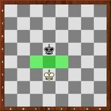
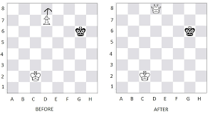
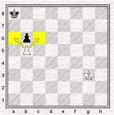
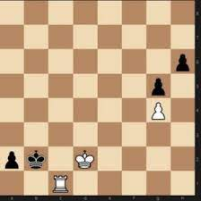

Endgame Strategy: King and Pawn Endgames
King and pawn endgames are among the most important endgames in chess. In these endgames, each side has only a king and one or more pawns remaining on the board. The objective is to promote one of your pawns to a queen or another piece, while preventing your opponent from doing the same.
Key Positions
There are many key positions that arise in king and pawn endgames. One of the most important is the opposition, which occurs when the kings face each other with only one square in between. The player who is not in the opposition may have to move their king away, allowing the opponent's king to advance and capture a pawn.
Pawn Promotion
One of the key goals in king and pawn endgames is to promote a pawn to a queen or another piece. To do this, you must advance your pawn to the eighth rank and then promote it on the next move. It's important to be careful when advancing your pawn, as your opponent may try to block its path or capture it.
Outflanking
Outflanking is a strategy where you try to force your opponent's king away from your pawn. This can be done by advancing your king and pawn together, while keeping your opponent's king away with your king. If you can get your king and pawn to the sixth rank, you will be able to create a passed pawn, which can be difficult for your opponent to stop.
Zugzwang
Zugzwang is a situation where a player would prefer not to make a move, because any move would lead to a disadvantage. In king and pawn endgames, zugzwang can occur when one player has to move their king, allowing the opponent to advance their pawn. It's important to be aware of zugzwang and to try to create zugzwang positions for your opponent whenever possible.
